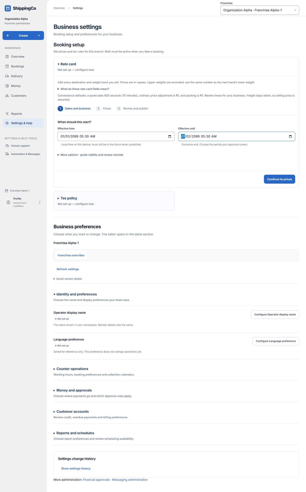
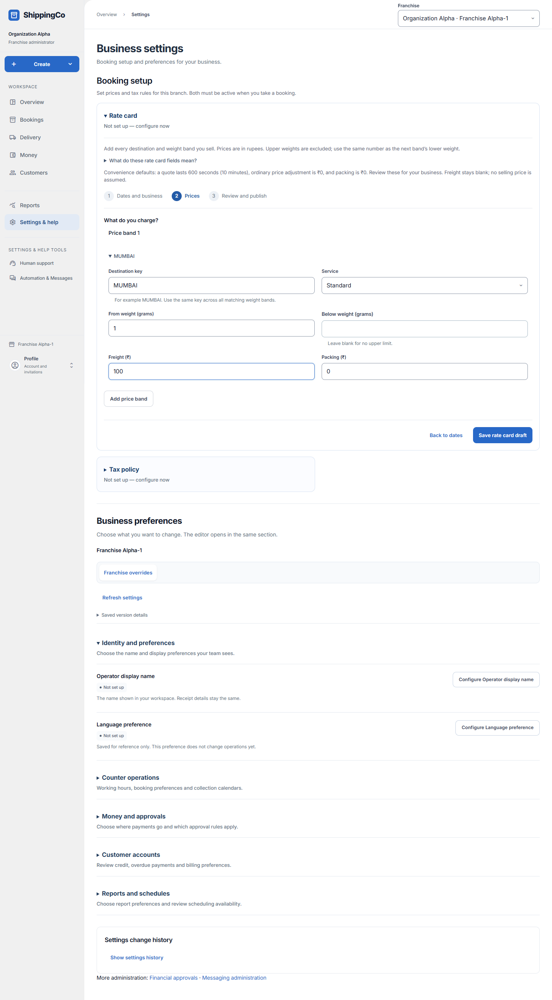
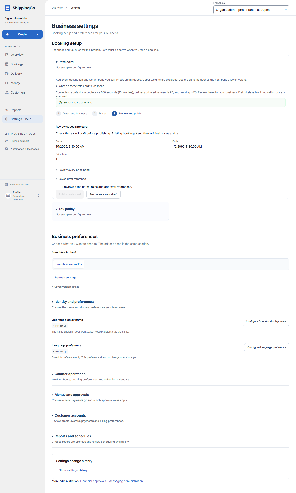

Set up a rate card
Set the prices a branch can use for bookings. Only an authorised owner or administrator can publish them.
Choose the right setup route
- For one new named service, use Add service inside New booking. It supports a flat price or first-kg plus additional-kg prices.
- For a complete dated price-band rate card, open Settings & help, then Rate card in Booking setup.
- The rate-card editor has three steps: Dates and business, Prices, then Review and publish.
- Have the actual approved selling prices ready. The app does not supply a selling price for your business.
- Only one policy editor is open at a time, so opening Tax policy closes the rate-card panel.
Step 1 - Dates and business
- Effective from: choose when these prices start, using the local time shown on your device. The start must still be in the future when published.
- Effective until: choose when these prices stop. The end time is excluded; the next rate card can start at that exact time.
- A new period must not overlap an existing published period. Check the current period shown above the form.
- More options - quote validity and review records contains less common settings. Leave the panel closed when its defaults fit the approved setup.
- Quote validity (seconds): how long a calculated quote remains usable. The convenience default is 600 seconds, or 10 minutes.
- Approval basis: Review when publishing records who publishes and when. Existing approval document is for a real approval you already have.
- Approval reference appears only for an existing approval document. Enter that real document’s reference; it is not a government approval number.
- Source basis: choose Entered directly in this form or Existing source document. A source reference is needed only for a document that actually exists.
- Allowed price adjustment (₹): the ordinary adjustment limit before extra approval. The default is zero. Use the business’s authorised limit.
- Select Continue to prices. No published prices change at this step.

Step 2 - Price bands and fields
- Destination key: enter the pricing destination, for example MUMBAI. Use capital letters, numbers and underscores, starting with a letter. Keep the same key for bands in the same destination.
- Service: choose Standard, Express or Same city.
- From weight (grams): the smallest combined packed weight included in the band. Enter a positive whole number of grams.
- Below weight (grams): the upper weight is not included. Leave it blank for no upper limit.
- For example, From 1 and Below 1000 covers 1 to 999 grams. A band starting at 1000 covers the next weights.
- Freight (₹): enter the fixed freight amount for the whole booking in that band. This field is not a per-kg multiplier.
- Packing (₹): enter the packing amount for the band. Zero means no packing charge.
- Add price band adds another destination, service or weight band. Remove price band removes that row from the draft.
- Avoid overlapping bands for the same destination and service. Check small, boundary and heavier weights before publishing.
- Use Back to dates if needed; entered prices remain. Select Save rate card draft when the rows are ready.

Step 3 - Review and publish
- Check the saved start and end, number of bands and every price row.
- Open Review every price band to see the complete saved row summaries.
- Tick I reviewed the dates, rules and approval references, then select Publish rate card.
- Publishing makes this version fixed. Existing bookings keep their original price evidence.
- If a correction is needed before publication, choose Revise as a new draft and review again.
- After publication, wait until the effective start before using the rates. The branch also needs an active tax policy.
- If the connection is uncertain, use Retry same request. Do not create a second draft to guess what happened.
- If publication rejects a past start or overlapping period, prepare a corrected new draft. Do not change a published version’s history.
